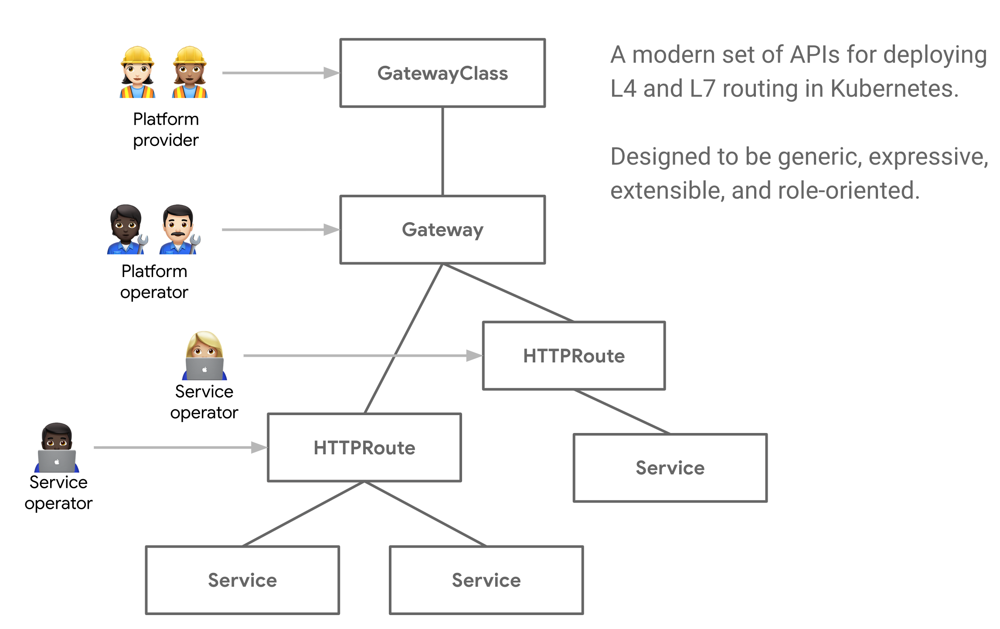

Introduction
Service APIs is an open source project, working under SIG-NETWORK, that is evolving service networking APIs within the Kubernetes ecosystem. Service APIs are the user interfaces you use to expose your Kubernetes applications - Services, Ingress, and more.
What is the goal of Service APIs?
Service APIs aims to improve these interfaces by making them more expressive, extensible, and role-oriented while remaining as generic routing APIs that have many implementations and broad industry support.
Service APIs are really a collection of API resources - Service,
GatewayClass, Gateway, HTTPRoute, TCPRoute, and so on. These resources
are used together to model a wide variety of different networking use-cases. See
API Concepts to learn more about the API model.

How do the Service APIs improve upon current standards like Ingress?
- More expressive - They express more core functionality for things like header-based matching, traffic weighting, and other capabilities that were only possible through custom means in the Ingress spec.
- More extensible - They allow for custom resources to be linked at multiple layers within its resources. This allows for more granular customization at the appropriate places within the API structure.
- Role oriented - They are broken into API resources that map to the types
of roles that commonly deploy and configure load balancing. - Generic - This isn't an improvement but rather something that should stay the same. Just as Ingress is a universal specification with numerous implementations, Service APIs are designed to be a portable specification for many implementations.
Some other notable capabilities include …
- Shared Gateways - They allow the sharing of load balancers and VIPs by permitting independent Route resources to bind to the same Gateway. This allows teams to share infrastructure safely without requiring direct coordination.
- Typed backend references - With typed backend references Routes can reference Kubernetes Services, but also any kind of Kubernetes resource that is designed to be a Gateway backend.
- Cross-Namespace references - Routes across different Namespaces can bind
to Gateways. This allows for shared networking infrastructure despite Namespace
segmentation for workloads. - Classes - GatewayClasses formalize types of load balancing implementations. These classes make it easy and explicit for users to understand what kind of capabilities are available as a resource model itself.
Where to get started
To get started, please read through API overview. These documents give the necessary background to understand the API and the use-cases it targets. Once you have a good understanding of the API at a higher-level, please follow one of our guides to dive deeper into different parts of the API.
For a complete API reference, please refer to:
How to get involved
This project has many contributors and we welcome anybody and everybody to get involved. Join our weekly meetings, file issues, or ask questions in Slack. No contribution is too small - even opinions matter!